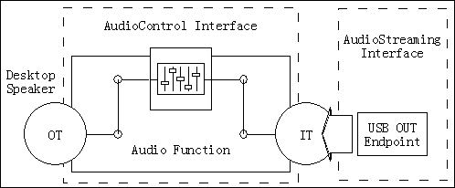

const USBDeviceDescriptor deviceDescriptor; |
| Offset | Field | Size | Value | Description |
| 0 | bLength | 1 | 0x12 | Size of this descriptor, in bytes. |
| 1 | bDescriptorType | 1 | 0x01 | DEVICE descriptor (USBGenericDescriptor_DEVICE). |
| 2 | bcdUSB | 2 | 0x0200 | 2.00 - current revision of USB specification. |
| 4 | bDeviceClass | 1 | 0x00 | Device defined at interface level. |
| 5 | bDeviceSubClass | 1 | 0x00 | Unused. |
| 6 | bDeviceProtocol | 1 | 0x00 | Unused. |
| 7 | bMaxPacketSize0 | 1 | 0x08 | 8 bytes (BOARD_USB_ENDPOINTS_MAXPACKETSIZE(0)). |
| 8 | idVendor | 2 | 0x03EB | Atmel Vendor ID (AUDDSpeakerDriverDescriptors_VENDORID). |
| 10 | idProduct | 2 | 0x6128 | Product ID (AUDDSpeakerDriverDescriptors_PRODUCTID). |
| 12 | bcdDevice | 2 | 0x0100 | Device Release Code (AUDDSpeakerDriverDescriptors_RELEASE). |
| 14 | iManufacturer | 1 | 0x01 | Index to manufacture name in Unicode (manufacturerDescriptor). |
| 15 | iProduct | 1 | 0x02 | Index to product name in Unicode (productDescriptor). |
| 16 | iSerialNumber | 1 | 0x03 | Index to serial number in Unicode (serialNumberDescriptor). |
| 17 | bNumConfigurations | 1 | 0x01 | One configuration. |
const AUDDSpeakerDriverConfigurationDescriptors configurationDescriptors; |
| Offset | Field | Size | Value | Description |
| 0 | bLength | 1 | 0x09 | Size of this descriptor, in bytes. |
| 1 | bDescriptorType | 1 | 0x02 | CONFIGURATION descriptor (USBGenericDescriptor_CONFIGURATION). |
| 2 | wTotalLength | 2 | 0x???? | Length of the total configuration block in bytes including this descriptor (AUDDSpeakerDriverConfigurationDescriptors) |
| 4 | bNumInterfaces | 1 | 0x02 | Two interfaces. |
| 5 | bConfigurationValue | 1 | 0x01 | ID of this configuration. |
| 6 | iConfiguration | 1 | 0x00 | Unused. |
| 7 | bmAttributes | 1 | 0x?? | BOARD_USB_BMATTRIBUTES |
| 8 | bMaxPower | 1 | 0x32 | 100mA Max. power consumption. USBConfigurationDescriptor_POWER(100) |
| Offset | Field | Size | Value | Description |
| 0 | bLength | 1 | 0x09 | Size of this descriptor, in bytes. |
| 1 | bDescriptorType | 1 | 0x04 | INTERFACE descriptor (USBGenericDescriptor_INTERFACE). |
| 2 | bInterfaceNumber | 1 | 0x00 | Index of this interface. |
| 3 | bAlternateSetting | 1 | 0x00 | Index of this setting. |
| 4 | bNumEndpoints | 1 | 0x00 | 0 endpoints. |
| 5 | bInterfaceClass | 1 | 0x01 | AUDIO (AUDControlInterfaceDescriptor_CLASS). |
| 6 | bInterfaceSubClass | 1 | 0x01 | AUDIO_CONTROL (AUDControlInterfaceDescriptor_SUBCLASS). |
| 7 | bInterfaceProtocol | 1 | 0x00 | Unused. |
| 8 | iInterface | 1 | 0x00 | Unused. |
| Offset | Field | Size | Value | Description |
| 0 | bLength | 1 | 0x09 | Size of this descriptor, in bytes. |
| 1 | bDescriptorType | 1 | 0x24 | CS_INTERFACE descriptor (AUDGenericDescriptor_INTERFACE). |
| 2 | bDescriptorSubtype | 1 | 0x01 | HEADER subtype (AUDGenericDescriptor_HEADER). |
| 3 | bcdADC | 2 | 0x0100 | Revision of class specification - 1.0 |
| 5 | wTotalLength | 2 | 0x???? | Total size of class specific descriptors (AUDDSpeakerDriverAudioControlDescriptors). |
| 7 | bInCollection | 1 | 0x01 | Number of streaming interfaces. |
| 8 | baInterfaceNr(1) | 1 | 0x01 | AudioStreaming interface 1 belongs to this AudioControl interface. |
| Offset | Field | Size | Value | Description |
| 0 | bLength | 1 | 0x0C | Size of this descriptor, in bytes. |
| 1 | bDescriptorType | 1 | 0x24 | CS_INTERFACE descriptor (AUDGenericDescriptor_INTERFACE). |
| 2 | bDescriptorSubType | 1 | 0x02 | INPUT_TERMINAL subtype (AUDGenericDescriptor_INPUTTERMINAL). |
| 3 | bTerminalID | 1 | 0x00 | ID of this Input Terminal (AUDDSpeakerDriverDescriptors_INPUTTERMINAL). |
| 4 | wTerminalType | 2 | 0x0101 | Terminal is USB stream (AUDInputTerminalDescriptor_USBSTREAMING). |
| 6 | bAssocTerminal | 1 | 0x01 | Associated to Output Terminal (AUDDSpeakerDriverDescriptors_OUTPUTTERMINAL). |
| 7 | bNrChannels | 1 | 0x02 | Two channel. |
| 8 | wChannelConfig | 2 | 0x0003 | Left plus right front channel. |
| 10 | iChannelNames | 1 | 0x00 | Unused. |
| 11 | iTerminal | 1 | 0x00 | Unused. |
| Offset | Field | Size | Value | Description |
| 0 | bLength | 1 | 0x09 | Size of this descriptor, in bytes. |
| 1 | bDescriptorType | 1 | 0x24 | CS_INTERFACE descriptor (AUDGenericDescriptor_INTERFACE). |
| 2 | bDescriptorSubType | 1 | 0x03 | OUTPUT_TERMINAL subtype (AUDGenericDescriptor_OUTPUTTERMINAL). |
| 3 | bTerminalID | 1 | 0x01 | ID of this Output Terminal (AUDDSpeakerDriverDescriptors_OUTPUTTERMINAL). |
| 4 | wTerminalType | 2 | 0x0301 | Terminal is Desktop speaker. |
| 6 | bAssocTerminal | 1 | 0x01 | Associated to Input Terminal (AUDDSpeakerDriverDescriptors_INPUTTERMINAL). |
| 7 | bSourceID | 1 | 0x02 | From Feature Unit (AUDDSpeakerDriverDescriptors_FEATUREUNIT). |
| 8 | iTerminal | 1 | 0x00 | Unused. |
| Offset | Field | Size | Value | Description |
| 0 | bLength | 1 | 0x0A | Size of this descriptor, in bytes. |
| 1 | bDescriptorType | 1 | 0x24 | CS_INTERFACE descriptor (AUDGenericDescriptor_INTERFACE). |
| 2 | bDescriptorSubType | 1 | 0x02 | FEATURE_UNIT subtype (AUDGenericDescriptor_FEATUREUNIT). |
| 3 | bUnitID | 1 | 0x02 | ID of this Feature Unit (AUDDSpeakerDriverDescriptors_FEATUREUNIT). |
| 4 | bSourceID | 1 | 0x00 | From Input Terminal (AUDDSpeakerDriverDescriptors_INPUTTERMINAL). |
| 5 | bControlSize | 1 | 0x01 | 1 byte per channel for controls |
| 6 | bmaControls | 3 | 0x000001 | Master channel mute control, no other controls. |
| 9 | iFeature | 1 | 0x00 | Unused. |
| Offset | Field | Size | Value | Description |
| 0 | bLength | 1 | 0x09 | Size of this descriptor, in bytes. |
| 1 | bDescriptorType | 1 | 0x04 | INTERFACE descriptor (USBGenericDescriptor_INTERFACE). |
| 2 | bInterfaceNumber | 1 | 0x01 | Index of this interface. |
| 3 | bAlternateSetting | 1 | 0x00 | Index of this setting. |
| 4 | bNumEndpoints | 1 | 0x00 | 0 endpoint. |
| 5 | bInterfaceClass | 1 | 0x01 | AUDIO (AUDStreamingInterfaceDescriptor_CLASS). |
| 6 | bInterfaceSubClass | 1 | 0x02 | AUDIO_STREAMING (AUDStreamingInterfaceDescriptor_SUBCLASS). |
| 7 | bInterfaceProtocol | 1 | 0x00 | Unused (AUDStreamingInterfaceDescriptor_PROTOCOL). |
| 8 | iInterface | 1 | 0x00 | Unused. |
| Offset | Field | Size | Value | Description |
| 0 | bLength | 1 | 0x09 | Size of USBInterfaceDescriptor in bytes. |
| 1 | bDescriptorType | 1 | 0x04 | INTERFACE descriptor (USBGenericDescriptor_INTERFACE). |
| 2 | bInterfaceNumber | 1 | 0x01 | Index of this interface. |
| 3 | bAlternateSetting | 1 | 0x01 | Index of this setting. |
| 4 | bNumEndpoints | 1 | 0x01 | 1 endpoint. |
| 5 | bInterfaceClass | 1 | 0x01 | AUDIO (AUDStreamingInterfaceDescriptor_CLASS). |
| 6 | bInterfaceSubClass | 1 | 0x02 | AUDIO_STREAMING (AUDStreamingInterfaceDescriptor_SUBCLASS). |
| 7 | bInterfaceProtocol | 1 | 0x00 | Unused (AUDStreamingInterfaceDescriptor_PROTOCOL). |
| 8 | iInterface | 1 | 0x00 | Unused. |
| Offset | Field | Size | Value | Description |
| 0 | bLength | 1 | 0x06 | Size of AUDStreamingInterfaceDescriptor in bytes. |
| 1 | bDescriptorType | 1 | 0x24 | CS_INTERFACE descriptor (AUDGenericDescriptor_INTERFACE). |
| 2 | bDescriptorSubType | 1 | 0x01 | GENERAL subtype (AUDStreamingInterfaceDescriptor_GENERAL). |
| 3 | bTerminalLink | 1 | 0x02 | Unit ID of the Input Terminal (AUDDSpeakerDriverDescriptors_INPUTTERMINAL). |
| 4 | bDelay | 1 | 0x00 | No interface delay. |
| 5 | wFormatTag | 2 | 0x0001 | PCM Format (AUDFormatTypeOneDescriptor_PCM). |
| Offset | Field | Size | Value | Description |
| 0 | bLength | 1 | 0x0B | Size of AUDFormatTypeOneDescriptor1 in bytes. |
| 1 | bDescriptorType | 1 | 0x24 | CS_INTERFACE descriptor\ (AUDGenericDescriptor_INTERFACE). |
| 2 | bDescriptorSubType | 1 | 0x02 | FORMAT_TYPE subtype (AUDStreamingInterfaceDescriptor_FORMATTYPE). |
| 3 | bFormatType | 1 | 0x01 | FORMAT_TYPE_I (AUDFormatTypeOneDescriptor_FORMATTYPEONE). |
| 4 | bNrChannels | 1 | 0x02 | 2 channels (AUDDSpeakerDriver_NUMCHANNELS). |
| 5 | bSubFrameSize | 1 | 0x02 | Two bytes per audio subframe (AUDDSpeakerDriver_BYTESPERSAMPLE). |
| 6 | bBitResolution | 1 | 0x10 | 16 bits per sample (AUDDSpeakerDriver_BYTESPERSAMPLE * 2). |
| 7 | bSamFreqType | 1 | 0x01 | One frequency supported. |
| 8 | tSamFreq | 3 | 4800 | 4800Hz (AUDDSpeakerDriver_SAMPLERATE). |
| Offset | Field | Size | Value | Description |
| 0 | bLength | 1 | 0x09 | Size of AUDFormatTypeOneDescriptor1 in bytes. |
| 1 | bDescriptorType | 1 | 0x24 | ENDPOINT descriptor (USBGenericDescriptor_ENDPOINT). |
| 2 | bEndpointAddress | 1 | 0x04 | OUT endpoint 4 See USBEndpointDescriptor_ADDRESS See AUDDSpeakerDriverDescriptors_DATAOUT. |
| 3 | bmAttributes | 1 | 0x01 | Isochronous, not shared (USBEndpointDescriptor_ISOCHRONOUS). |
| 4 | wMaxPacketSize | 2 | 0x???? | BOARD_USB_ENDPOINTS_MAXPACKETSIZE(). |
| 6 | bInterval | 1 | 0x01 | One packet per frame. |
| 7 | bRefresh | 1 | 0x00 | Unused. |
| 8 | bSynchAddress | 1 | 0x00 | Unused. |
| Offset | Field | Size | Value | Description |
| 0 | bLength | 1 | 0x07 | Size of AUDDataEndpointDescriptor in bytes. |
| 1 | bDescriptorType | 1 | 0x25 | CS_ENDPOINT descriptor (AUDGenericDescriptor_ENDPOINT). |
| 2 | bDescriptorSubType | 1 | 0x01 | GENERAL subtype (AUDDataEndpointDescriptor_SUBTYPE). |
| 3 | bmAttributes | 1 | 0x00 | No sampling frequency control no pitch control no packet padding. |
| 4 | bLockDelayUnits | 1 | 0x00 | Unused. |
| 5 | wLockDelay | 2 | 0x0000 | Unused. |
| Offset | Field | Size | Value | Description |
| 0 | bmRequestType | 1 | 0x01 | D7:0=Host to Device. D6..5:00=Standard Request. D4..0:00001=Recipient is interface. |
| 1 | bRequest | 1 | 0x0B | SET_INTERFACE. |
| 2 | wValue | 2 | 0x0000 or 0x0001 | Zero bandwidth or normal isochronous operation. |
| 4 | wIndex | 2 | 0x0001 | Interface number of the AudioStreaming interface. |
| 6 | wLength | 2 | 0x0000 | No Parameter Block. |
| Offset | Field | Size | Value | Description |
| 0 | bmRequestType | 1 | 0x01 | D7:0=Host to Device. D6..5:01=Class Request. D4..0:00001=Recipient is interface. |
| 1 | bRequest | 1 | 0x01 | SET_CUR. |
| 2 | wValue | 2 | 0x0100 | Mute control (AUDFeatureUnitRequest_MUTE) of Master channel (AUDDSpeakerDriver_MASTERCHANNEL). |
| 4 | wIndex | 2 | 0x0200 | Feature Unit (AUDDSpeakerDriverDescriptors_FEATUREUNIT) and AudioControl Interface (AUDDSpeakerDriverDescriptors_CONTROL). |
| 6 | wLength | 2 | 0x0001 | Paramter Block Length |
| Offset | Field | Size | Value | Description |
| 0 | bmRequestType | 1 | 0x01 | D7:0=Host to Device. D6..5:01=Class Request. D4..0:00001=Recipient is interface. |
| 1 | bRequest | 1 | 0x81 | GET_CUR. |
| 2 | wValue | 2 | 0x0100 | Mute control (AUDFeatureUnitRequest_MUTE) of Master channel (AUDDSpeakerDriver_MASTERCHANNEL). |
| 4 | wIndex | 2 | 0x0200 | Feature Unit (AUDDSpeakerDriverDescriptors_FEATUREUNIT) and AudioControl Interface (AUDDSpeakerDriverDescriptors_CONTROL). |
| 6 | wLength | 2 | 0x0001 | Paramter Block Length |